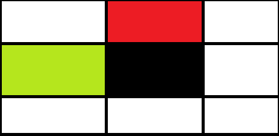
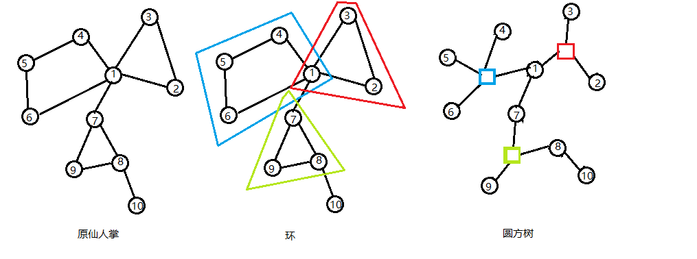

发现自己根本不会 $tarjan$ ,于是来学一学.
$tarjan$ 算法的几个不同应用中,都有建出 $dfs$ 树的过程.
若无特殊说明, $dfn$ 表示每个点的 $dfs$ 序, $low$ 表示这个点以及它的所有子孙连的所有点中 $dfn$ 的最小值.
在无向图中,由父亲走来的那条边不被用作更新 $low$ ,也不用判断点是否已经入队.
强连通分量
对于一个有向图的子图,若子图中的任意两个点可以互相到达,则称这个子图为强连通子图.
强连通分量, $SCC$ ,是极大的强连通子图,即无法通过拓展得到更大的强连通子图.
可以利用 $tarjan$ 算法求出每个点所在的强连通分量.
$dfs$ 时不断将当前节点入栈.
回溯时,若当前节点 $u$ 满足 $dfn(u)=low(u)$ ,则不断弹栈.将这些点都归入一个新的 $SCC$ 中,直到将 $u$ 也弹出.
割点
无向图中,若去掉节点 $u$ 以及所有与它关联的边后,连通块的数目增加,则称 $u$ 为割点.
可以利用 $tarjan$ 算法求出所有割点.
$dfs$ 时,若节点 $u$ 为其所在连通块的根,则当它的度数 $>1$ 时, $u$ 是割点.
若节点 $u$ 不为根,则当存在一个儿子 $v$ ,满足 $low(v)\ge dfn(u)$ 时, $u$ 是割点.
桥
无向图中,若去掉边 $(u,v)$ 后,连通块的数目增加,则称边 $(u,v)$ 为桥.
可以利用 $tarjan$ 算法求出所有桥.
$dfs$ 回溯时,若 $dfn(u)=low(u)$ ,则边 $(u,fa_u)$ 是桥.
边双连通分量
对于一个无向图的连通子图,若任意两点间存在两条边不相交的路径,则称这个子图为边的双连通子图.
这也等价于删掉这个子图中的任意一条边后,这个子图仍然连通,即子图内部不存在桥.
边双连通分量, $e-DCC$ ,简称边双,是极大的边的双连通子图,即无法通过拓展得到边更多的边的双联通子图.
每个点只会属于一个边双,除了桥之外,其他每条边也只会属于一个边双.
可以利用 $tarjan$ 算法求出每个点所在的边双.
若先将所有桥求出,则把所有桥删掉后,剩下的每个连通块就是边双了.
这个过程可以不显式的进行,在 $dfs$ 时,不断将点入栈,若 $dfn(u)=low(u)$ ,说明 $u$ 的父亲边是桥.
不断弹栈,将这些点归入一个新的边双,直到 $u$ 也被弹出.
bzoj 1718 Redundant Paths
将每个边双缩点,由于原图连通,最后会形成一棵树.
若这棵无向树有 $k$ 个叶子,则只需要将这些叶子两两连一条边,答案为 $\lceil \frac k 2\rceil$ .
由于有重边,所以在跑 $tarjan$ 时不记录父亲节点,而是记录从父亲节点来的边的编号.
时间复杂度 $O(m)$ .
bzoj 4435 Juice Junctions
由于每个点的度数不超过 $3$ ,所以两个点之间的流量只可能是 $0,1,2,3$ ,依次进行判断.
若 $S,T$ 不在同一个连通块,流量为 $0$ .
若 $S,T$ 在一个连通块,但不在一个边双中,流量为 $1$ .
只需要区分 $2$ 和 $3$ ,其实它们分别表示了 $S,T$ 之间有 $2/3$ 条边不相交的路径.
暴力枚举断掉一条边,求出断掉这条边后每个点所在的边双.
若所有的 $m+1$ 种情况下, $S,T$ 所在的边双都一样,则答案为 $3$ ,否则为 $2$ ,这可以利用 $hash$ 进行判断.
时间复杂度 $O(m^2)$ .
bzoj 3590 Quare
要用最小的代价把整张图连成一个边双,考虑边双的形成方式,可以这样进行理解.
单独的一个点是一个边双,在一个边双上加入一条链,满足链的首尾都在这个边双中,可以得到更大的边双.
于是可以用状压 $dp$ 来处理这个过程.
设 $f(S)$ 表示将集合 $S$ 中的点连成一个边双的最小花费.
设 $g(S,i,j)$ 表示将集合 $S$ 中的点连成一条首尾是 $i,j$ 的链的最小花费.
转移时枚举这条链,还需要把这条链接进当前的边双中.
设 $h(S,i,0)$ 表示从 $i$ 向 $S$ 中的某一个点连一条边的最小花费.
由于这条链可能只有 $1$ 个点,所以还要设 $h(S,i,1)$ 表示次小花费.
转移时,枚举链的首尾以及链包含的所有点,枚举它接进的边双含有的点.
$$
f(S)+g(T,i,j)+h(S,i)+h(S,j)\to f(S+T),i\neq j,S\cup T=\emptyset \\
f(S)+g(T,i,i)+h(S,i)+g(S,i)\to f(S+T),S\cup T=\emptyset
$$
需要预处理出 $g,h$ ,瓶颈在 $g$ 的预处理上,时间复杂度 $O(3^n\cdot n^4)$ ,但显然跑不满.
bzoj 4229 选择
把所有操作离线下来,倒着做,就变成了加边的同时动态维护边双信息.
利用 $LCT$ 维护边双森林,加边时,若两点未连通,就直接连起来,否则就把这两点路径上的所有点缩成一个边双.
每次要用到一个点时,都改成用它所在边双的那个超级点,这样能够保证 $dfs$ 总复杂度为 $O(n)$ .
用并查集维护每个点所在的边双以及原图的连通性.
时间复杂度 $O(n\log n)$ .
bzoj 2959 长跑
把每个边双缩成一个点,这个超级点的点权为原来所有的点点权之和.
可以发现,答案就是两个点所在边双路径上的超级点权值之和.
由于要支持加边操作,需要用 $LCT$ 动态维护边双,时间复杂度 $O(n\log n)$ .
点双连通分量
对于一个无向图的连通子图,若任意两点间存在两条除起点终点外点不相交的路径,则称这个子图为点的双连通子图.
这也等价于删掉这个子图中的任意一个点后,这个子图仍然连通,即子图内部不存在割点.
点双连通分量, $v-DCC$ ,简称点双,是极大的点的双连通子图,即无法通过拓展得到点更多的点的双联通子图.
原图中的每个割点可能属于多个点双,但每条边只会属于一个点双.
可以利用 $tarjan$ 算法求出每条边所在的点双.
在 $dfs$ 时不断将边入栈,当通过边 $(u,v)$ 发现 $low(v)\ge dfn(u)$ ,就找到了一个割点 $u$ .
不断弹栈,将弹出的边归入一个新的点双,直到边 $(u,v)$ 也被弹出.
bzoj 2730 矿场搭建
用 $tarjan$ 算法求出所有点双和割点.
对于一个点双,记它包含的点数为 $x$ ,分以下 $3$ 种情况讨论.
- 点双内没有割点,那么要在点双中建两个救援点,贡献分别为 $2,{x\choose 2}$ .
- 点双内有 $1$ 个割点,那么在点双中选一个不是割点的点作为救援点就可以了,贡献分别为 $1,x-1$ .
- 点双内有 $2$ 个或更多的割点,那么不用在这个点双内建救援点,贡献分别为 $0,1$ .
由于救援点不会建在割点上,所以统计的贡献不会重复.
广义圆方树
在无向图中利用 $tarjan$ 算法求出所有点双,对于每个点双建一个方点,原来的点是圆点.
每个方点向这个点双中所有圆点连边,在圆点上维护这个点的信息,方点上维护这个点双的信息.
这样就可以处理一些与无向图路径,或点双有关的问题了.贴一张网上找来的图.

严格来说,这样形成的新图其实是一个森林,树的数目是原图中连通块的数目.
显然,圆点只会与方点相邻,方点只会与圆点相邻,若两个方点有公共的相邻圆点,则这个圆点代表这两个点双的割点.
注意有圆点和方点,要开两倍的空间.
bzoj 1123 BLO
把圆方树建出来,去掉一个圆点 $u$ ,增加的不能互通的点对数目就是两端都是圆点,且经过 $u$ 的路径数目.
bzoj 3331 压力
考虑把圆方树建出来,那么两个圆点之间的必经点,就是圆方树上两点路径上的所有圆点.
用树上差分打下标记就可以处理了.
bzoj 5138 Push a Box
枚举第一步怎么推之后,状态数只有 $O(nm)$ ,只用记录箱子的位置以及人在箱子的哪一个相邻块上.
转移时,有两种决策,一种是推一步箱子,另一种是不移动箱子,走到另一个与箱子相邻的块上.
如下图,当前箱子在黑色格子 $w$ ,人在红色格子 $u$ ,要走到绿色格子 $v$ .

障碍的位置是不变的,一开始就可以直接处理掉,只建出有用的边.
而箱子的位置是可以变化的,这等价于每次询问断掉箱子所在的点 $w$ 后 $u$ 与 $v$ 是否连通.
当没有断掉 $w$ 时, $u\to w\to v$ 是一条合法路径,所以断掉 $w$ 后两者连通,等价于原来 $u,v$ 在一个点双中.
建出圆方树,则等价于询问在树上是否有 $dis(u,v)= 2$ ,这只可能是祖孙或者兄弟关系,简单判一下即可.
时间复杂度 $O(nm)$ .
bzoj 5463 铁人两项
考虑建出圆方树,若枚举 $s,f$ ,则合法的 $c$ 的数目就是 $s$ 到 $f$ 经过的所有点双的点数和减去 $s,f$ 这两个点.
将方点权值设为其代表点双的点数,圆点权值设为 $-1$ ,则合法的 $c$ 的数目就是圆方树上 $s$ 到 $f$ 路径的点权和.
考虑枚举每个点作为 $c$ 的贡献,就是它的权值与经过它的两端都是圆点的路径数目之积.
仙人掌和圆方树
仙人掌是一种特殊的无向连通图,满足任意一条边最多会在一个简单环上.
仙人掌的圆方树构造,和一般无向图的圆方树构造略有不同.
对于每一个环(点双)建一个方点,这个方点向环内所有圆点连边,不在一个环上的两个圆点之间的边保留.

方点只会和圆点相连,圆点可以与方点相连,也可以与圆点相连.
对于很多仙人掌的题,可以先考虑在树上怎么做,再额外考虑方点怎么处理,尝试将做法搬到圆方树上来.
bzoj 4316 小C的独立集
在遇到环时,把环的最后一条边断掉,强制第一个点选/不选,对这个环额外做两次 $dp$ .
其余部分和普通的树形 $dp$ 一样.
bzoj 1023 cactus
设 $f(i)$ 表示从节点 $i$ 往下走,能走出的最长路径.
遇到环的时候,把这个环拿出来单独做一次 $dp$ .
假设 $i,j$ 是环上不同的两点,那么可以用 $f(i)+f(j)+dis(i,j)$ 去更新答案.
把这个环上所有点存在一个序列中,还要复制一半接在后面,就可以直接用后面的编号减去前面的编号作为 $dis$ 了.
只有距离不超过环的一半的点才能更新答案,这可以用一个单调队列进行优化转移.
最后还要更新这个环的入点的 $f$ 值.
bzoj 2125 最短路
把圆方树建出来,定义一个环的根为方点的父亲,这相当于在环中取出了一个点作为代表点.
对于圆方边,将权值设为这个圆点到方点的根的最短距离.
询问时,就像在树上询问最短路一样,先求出 $lca$ ,但这里要分情况讨论.
若 $lca$ 是圆点,则可以直接回答.
若 $lca$ 是方点,那么就不能算接在 $lca$ 的那两条边的贡献,而是改成与 $lca$ 相邻的两个圆点的最短距离.
考虑当询问在同一个环上,但都不是代表点的两个点的距离时,不特判 $lca$ 是方点就会出错.
Uoj 189 火车司机出秦川
把圆方树建出来,对于每次询问,建出所有关键点的虚树.
需要考虑的贡献分为两部分.
对于虚树上的每条边,代表了圆方树上的一条链,考虑计算出这条链的贡献.
对于虚树上的每个方点,需要算出对应的环上有哪些连续段被计入了贡献.
用树状数组维护每个点到根的树边长度总和 $f$ ,到根的最短路长度 $g$ ,到根的最长路长度 $h$ .
每个环的权值前缀和也需要用树状数组进行维护,这里可以用指针分配内存来实现开多个树状数组.
考虑通过树上差分打标记的方式,判断虚树上每条边有没有被计入最短路/最长路的贡献.
如果只计入了其中一者,则贡献为对应的 $g$ 或 $h$ ,如果两者都被计入,则贡献为 $g+h-f$ .
对于每条路径 $(x,y)$ ,先求出它们的 $lca$ ,若 $lca$ 是圆点,则直接打标记.
否则,把进入 $lca$ 的那两个圆点 $p_x,p_y$ 拿出来,对于路径 $(x,p_x),(y,p_y)$ 打标记,而对 $lca$ 这个方点特殊处理.
根据询问是最短路/最长路,可以求出这个方点上的 $1$ 或 $2$ 段区间有贡献,将区间记在这个方点上.
最后对每个方点,将这个方点上的区间排序取并,通过维护的环的权值前缀和计算贡献.
对于修改操作,分树边和环边两种情况讨论.
- 若修改的是树边,则会影响子树内的 $f,g,h$ .
- 若修改的是环边,则会影响环的权值前缀和,环上某一段子树的 $f,g$ ,另一段子树的 $f,h$ .
在对应的树状数组上进行修改即可.
时间复杂度 $O(S\log n)$ .